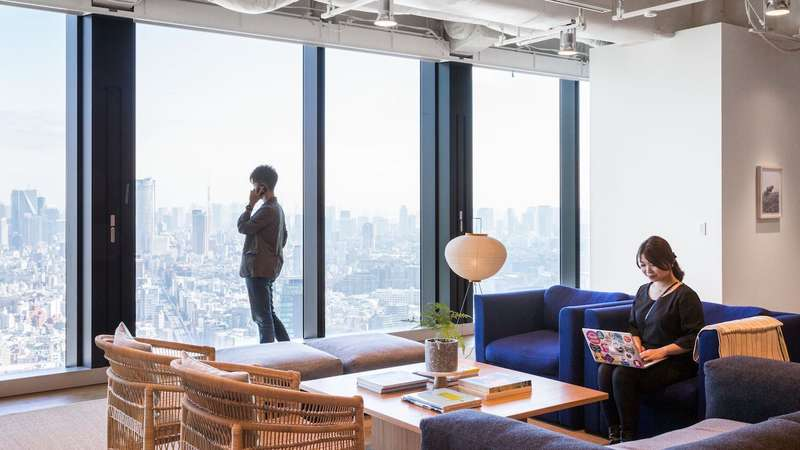

採用「代行」ではなく、
採用のプロである代表が、あなたの会社の“採用責任者”に。
戦略設計から、定着・組織づくりまで。
だから、「採って終わり」にならない。
支援企業の継続率 85.7%。

“はたらく”に、青春を。
採用を起点に、熱狂する組織をつくる。多くの採用代行は、工数を安く巻き取るモデルです。担当は分業や若手のオペレーターで、採れない・辞めるの本質——採用戦略の設計と、入社後の定着——には、踏み込みません。
採用は、“作業”を外注しても解決しない。
“意思決定”を持てる人が、必要だ。
採用・組織づくりを10年以上やってきた代表・鈴木本人が、担当ではなく“責任者”として伴走。分業も、若手任せもしません。
戦略設計から内定者フォロー・入社・定着・組織開発まで一気通貫。だから継続率85.7%。“採れた”ではなく“辞めない”を成果に。
社員インタビュー×AI（AOHARUデータ）で「活躍する人の共通点」を言語化。感覚の採用から、再現性のある採用へ。
DRのスカウト文章設計から、複数エージェントの一元管理まで。チャネルを最大限に使い、質の高い母集団をつくります。
他社RPOにない、低学年からの早期接点チャネル（AOHARUインターン由来）。新卒・早期採用の設計にも強い。
近い距離で、意思決定まで踏み込む。だからスピードも、成果も出る。
採用から組織開発まで、一気通貫。
現状の採用課題とフェーズを整理。最適な進め方を、その場でご提案します。
戦略・ペルソナ・KPI・チャネルを設計。“採るべき人物像”を言語化します。
代表が毎週並走し、実務からクロージング・定着まで一気通貫で実行します。
採用は、ただ人を増やすことではありません。
“どんな仲間と、どんな組織をつくるか”を決める、
未来への意思決定だと私たちは考えています。
WorCryは「はたらくに、青春を。」を掲げ、
採用を起点に“熱狂する組織づくり”を支援します。
単なる採用代行ではなく、採用を通じて組織の未来をつくる。
それが、WorCryの考えるRPOです。


 全案件 代表直PM
全案件 代表直PM
新卒で株式会社ジェイックに入社後、一貫して人材・採用領域でキャリアを積む。新人賞・トップセールス賞を複数回受賞し、最年少で福岡支店長を経験。経営企画・新卒事業を経てシニアマネージャー、ゼネラルマネージャーを歴任。2024年12月にWorCryを創業し、RPO・人材紹介・組織開発を融合した「組織を創る採用」を展開。創業1年5ヶ月で複数社の採用力を変革し、継続率85.7%を達成。
ジェイック入社。新人賞・トップセールス賞を連続受賞。
最年少で福岡支店長に就任。支店の立ち上げを担当。
経営企画→新卒事業→シニア／ゼネラルマネージャー。
株式会社WorCry 創業。採用コンサルタントとして独立。
専属人事がいなくても、採用は強くできます。
まずは30分、貴社の採用課題をお聞かせください。